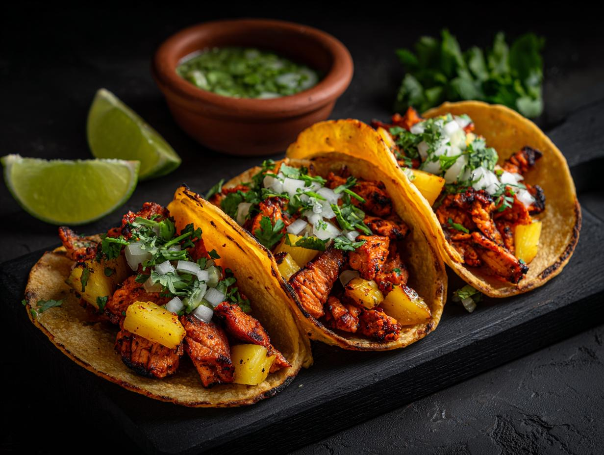
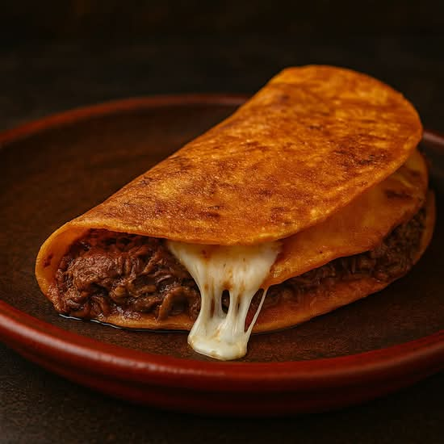
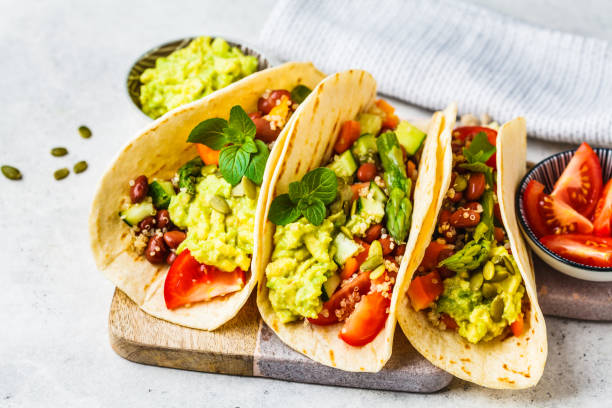
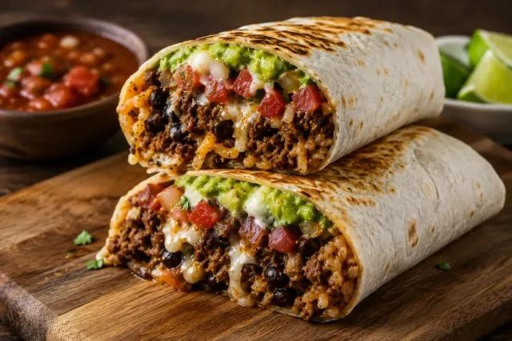

MAIS PEDIDO
Tacos
Al Pastor 72
Porco marinado, abacaxi tostado, cebola roxa e coentro.
R$ 24,90
Sabor de rua, feito de verdade
Receitas mexicanas com ingredientes frescos, fogo alto e entrega rápida. Da nossa cozinha direto para a sua fome.

Porco marinado, abacaxi tostado, cebola roxa e coentro.

PICANTECarne cozida lentamente, queijo, cebola e caldo consommé.
Picante

VEGGIECogumelos, milho tostado, guacamole e salsa verde.
Vegetariano

Tortilhas preparadas todos os dias. Carnes marinadas por 12 horas. Molhos feitos na casa. Aqui, a pressa só começa depois que o pedido fica pronto.
Texto do conceito fictício da marca, sem informação comercial real.